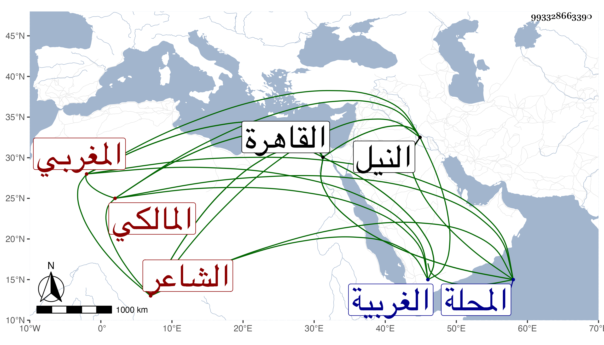

0902Sakhawi.DawLamic.ITO20230111-ara1.EIS1600.993328663390
Biography ID: 993328663390
947
عبد اللطيف بن نصر الله بن أحمد بن محمد بن عبد النور المغربي الأصل الطويلي المالكي الشاعر ، ولد سنة احدى وثمانمائة بالطويلة من الغربية بشاطئ النيل من عمل الدماير ونشأ بها ثم انتقل في سنة خمس وعشرين إلى القاهرة فأكمل بها حفظ القرآن وقرأ في ابن الجلاب على الزين عبادة واشتغل يسيرا وتدرب بالسراج عمر الأسواني ثم بالبدر البشتكي في النظم وتكسب بالشهادة في القاهرة وغيرها بل ناب في المحلة عن قضاتها وتعاني نظم الشعر وخمس البردة في ثلاثة تخاميس واستحذى بشعره الأكابر وغيرهم وكتب إلي بأبيات سمعتها مع غيرها منه وأكثر نظمه ليس بالطائل ولا كان بالثبت . مات في أواخر سنة ثمان وسبعين عفا الله عنه وإيانا .
